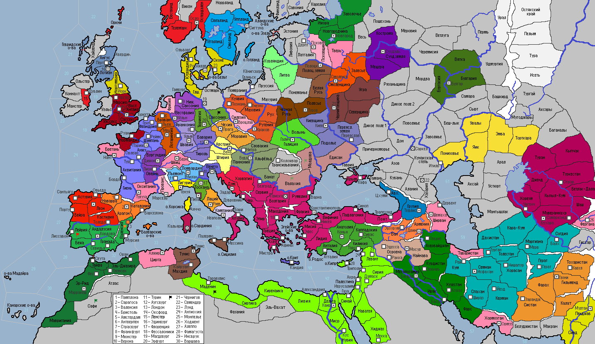

<== | 1 | | 2 | | 3 | | 4 | | 5 | | 6 | | 7 | | 8 | ==>
Открытие Лейфом Эрикссоном Америки
Лейф Счастливый считается первым европейцем, ступившим на континентальную часть Северной Америки, примерно за пять столетий до Христофора Колумба. С этого времени у Норвегии появляется колония в Грейландии. Путешествия Лейфа внесли лепту в формирование морских традиций скандинавов, которые на тот момент считались непревзойденными мореходами мира [+2 к дальности ЛС у Скандинавских народов, Норвегия: +3д/ход]
· Императором СРИ становится архиепископ Вестфалии Рупрехт I Мудрый. · Новым Римским Папой избран кастильский священник Пелайо, избравший имя Иоанн V. · Король Арагона Анцо Бесчестный стал вдохновителем союза католических монархов Кастилии и Франции, решивших что настало время для отвоевания у мусульман земель Пиренейского п-ва. Войска Арагона вторгаются в провинцию Валенсия и без боя берут контроль над ней и г.Валенсия. · Франция заключает военный союз с Лотарингией. · Полабские славяне вторгаются в Саксонию. · Киевский и черниговский князья заключают оборонительный союз. · Венгерский король Золта II воспринял как угрозу расположение таборов печенегов у своих границ и объявляет им войну. В сражении на берегу р.Дунай венгры наносят поражение печенегам, заставив их отступить в Молдову. Венгры одерживают вторую победу в Молдове. Однако, при переправе через Днестр печенеги находят в себе силы остановить венгров, пленяя их опытного полководца Дьёрдя. · Кастильские войска, ведомые королём Рамиро II идут рейдом через Андалусию в Гранаду. Вторая армия христиан захватывает Лейрию, но ей не хватает сил на захват провинции Бежа. · Венецианская республика, стремясь обеспечить свои торговые интересы в восточном средиземноморье и безопасность Крита, согласилась на вассальную зависимость от Византийской империи. · Халиф Омейадов Сулейман II, пропустив два болезненных удара христиан, выводит свои войска из г.Кордова и наносит удар в тыл кастильцам. Ожесточенное сражение в горах Гранады приводит к победе мусульман. Король Кастилии Рамиро II попадает в плен к врагу. · Буиды, Газневиды и Караханиды заключают оборонительный союз. · Суннитский Мосул становится вассалом шиитского Фатимидского султаната. · Половецкая орда пришла в движение и перекочевала на запад, заняв провинцию Понизовье. Половцы совершают грабительский набег на земли Караханидов в Туране. · В провинции Угра черниговская рать во главе с князем Юрием отбивает нападение варваров, пришедших с востока. · Альморавиды совершают поход в земли Сафи, разбивают там бедуинское войско и захватывают провинцию. · Фатимидский султан Альбассин I от нечего делать погружается в мистические познания. Берберы Фазании вторгаются в фатимидскую провинцию Маденин и захватывают её. · Грузия признает себя вассалом византийского императора Исаака II Ангела · Император Византии, борясь за чистоту нравов, распорядился о закрытии всех борделей в империи.